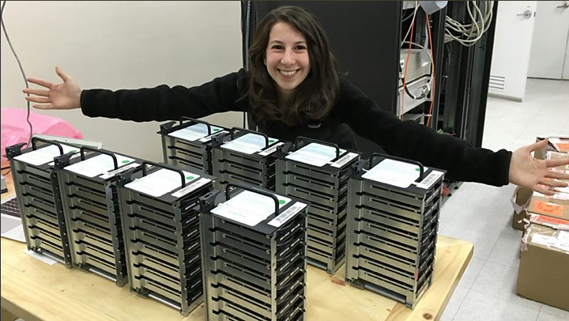
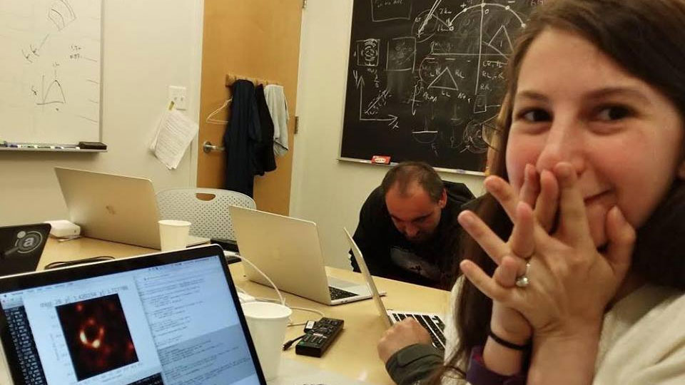

CHIRP (Continuous High-resolution Image Reconstruction using Patch priors) is a Bayesian algorithm used to perform a deconvolution on images created in radio astronomy. The acronym was coined by lead author Katherine L. Bouman in 2016.
The development of CHIRP involved a large team of researchers from MIT’s Computer Science and Artificial Intelligence Laboratory, the Harvard-Smithsonian Center for Astrophysics and the MIT Haystack Observatory, including Bill Freeman and Sheperd Doeleman. It was first presented publicly by Bouman at the IEEE Computer Vision and Pattern Recognition conference in June 2016.
Behind the scenes
CHIRP algorithm needs high computing power. Katherine L. Bouman with the computers she is using
This photo was taken when she finally took the picture of the black hole using CHIRP algorithm.